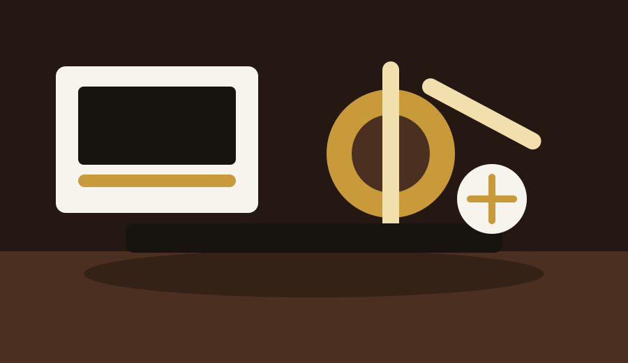

습도 45%-55%를 유지하고 계절이 바뀔 때 트러스로드와 현고를 점검하세요.
Studio grade selection
스튜디오를 완성하는 악기 셀렉션
클래식 기타의 목재 울림부터 스테이지 피아노, 브라스, 스튜디오 모니터까지 연주 공간의 톤을 완성합니다.

악기 데이터를 불러오는 중입니다.
0개 상품
전체 상품
Compare
추천 악기 비교표
| 모델 | 브랜드 | 종류 | 추천 대상 | 가격 | 재고 |
|---|
Brand Hall
좋은 악기는 연주자의 시간을 견딥니다
Grand Note는 목재 건조, 하드웨어 안정성, 전자 회로 노이즈, 사후 세팅까지 실제 연주 환경에서 필요한 기준으로 악기를 선별합니다.
Care Tips
악기 관리 팁
건반은 마른 극세사 천으로 닦고 페달 소음이 커지면 무리하게 조이지 말고 점검을 예약하세요.
연주 후 수분을 제거하고 마우스피스는 전용 브러시로 세척해 피스톤과 키 움직임을 보존하세요.
Reviews
고객 후기
픽업 노이즈가 낮고 출고 세팅이 안정적이라 바로 레코딩에 투입했습니다.
입문자 추천 필터로 필요한 모델만 빠르게 비교할 수 있어 선택이 쉬웠어요.
모니터와 믹서를 함께 비교하면서 작은 방에 맞는 장비를 고를 수 있었습니다.